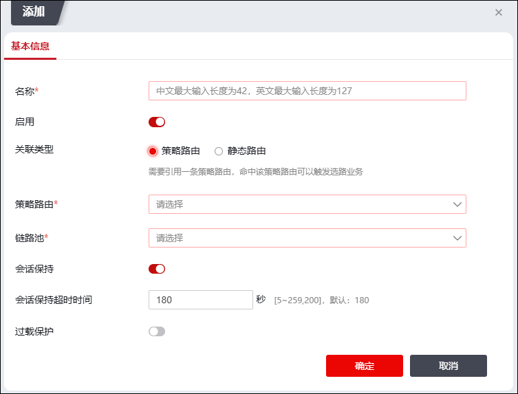

链路负载均衡功能中，用户访问的报文发送到设备后，设备会根据算法选择最佳的物理链路，将业务流量分发到该链路。
| 步骤1 | 选择 。 |
| 步骤2 | 点击【添加】按钮，弹出窗口界面如下图所示。 |

在设置链路负载均衡策略时，各项参数的具体说明如下表所示。
参数 |
|
说明 |
|
|---|---|---|---|
基本信息 |
名称 |
必填项，设置链路负载均衡策略的名称。最多输入127个字符。 |
|
启用 |
选择是否启用该负载均衡策略。 |
||
策略路由 |
引用一条策略路由，命中该策略路由可以触发选路业务。 |
||
链路池 |
必选项，选择已添加的链路池，主要用于设置负载均衡算法及链路信息。具体内容请参见 链路池。 |
||
会话保持 |
设置是否开启会话保持。若选择开启，则老化时间内所有相同IP的流量会选择相同的链路。 |
||
会话保持超时时间 |
设置会话保持表的超时时间。 |
||
过载保护 |
设置是否开启链路过载保护功能。 |
||
跨运营商调度 |
当开启“过载保护”开关时，可选择是否开启跨运营商调度。 |
||
静态路由 |
配置若干条静态等价路由，流量命中静态等价路由可以触发链路负载策略匹配，匹配成功可以触发选路业务。 |
||
设置目的地址，当用作于静态路由时可填，配置策略路由时不填。 |
|||
高级配置 |
源区域 |
设置源区域对象。点击下拉框可以选择区域对象，关于区域的设置请参见 区域。 |
|
源地址 |
设置源地址对象。点击【选择】可以添加地址对象，关于地址对象的设置请参见 地址。 说明：只有匹配此源地址的流量才会应用此链路负载均衡策略。 |
||
时间 |
设置时间对象，点击【选择】可以添加时间对象，关于时间对象的设置请参见 时间。 |
||
服务 |
设置服务对象，点击【选择】可以添加服务对象，关于服务对象的设置请参见 服务。 |
||
| 步骤3 | 点击【确定】按钮，完成链路负载均衡的添加。 |
| 步骤4 | 移动策略。 |
1）选中需要移动的策略，点击“移动”。
可选项为“之前”和“之后”。
2）点击【确定】按钮完成策略的移动。
| 步骤5 | 其他。 |
点击【编辑】按钮。可对所添加的出站策略进行编辑。
点击【删除】按钮，可对所勾选的策略批量删除。
点击【清空】按钮，可清空所有新增策略。
点击使能列“”图标，可对策略开启或关闭。